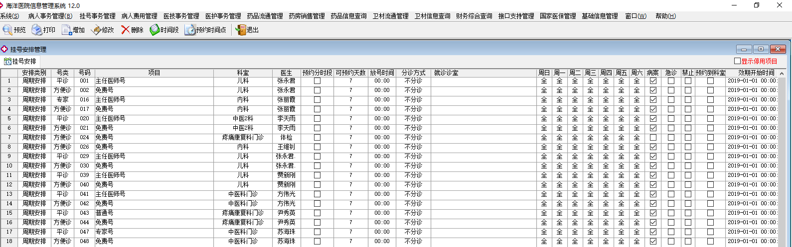
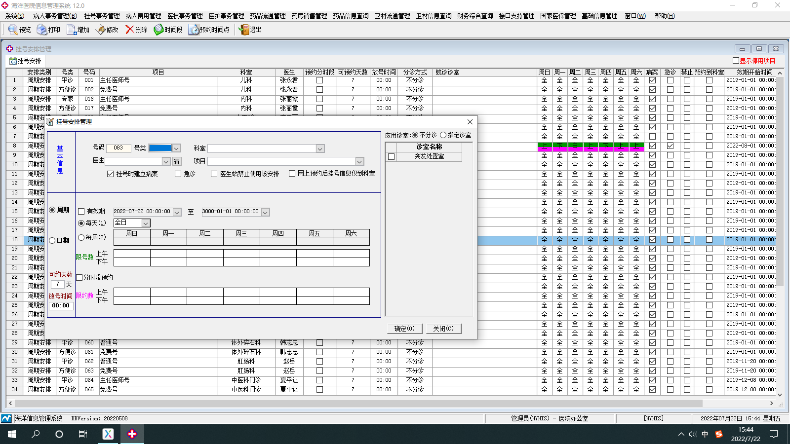

增加-增加可挂号医生的基本信息
修改-修改添加完的医生基本信息
删除-删除增加没使用过的信息，已经挂过号的信息不能删除
时间段-增加或者修改挂号医生的挂号时间段
预约时间点-预约挂已排班医生的号（他的固定时间点-上午某个时间点或者下午某个时间点）
本页功能是对挂号医生增加修改删除设定时间段以及预约时间段和类别科室停用项目隐藏及显示的基本信息设定



增加-点此功能键弹出页面，首先是基本信息的输入，
号码：是系统自动排序的排班医生挂号顺序号码，
号类：直接调取字典工具-医疗工作-挂号号类，
科室：调取基础信息管理-部门管理-门诊科室，
医生：调取基础信息管理-人员管理增加来的，
项目：调取基础信息管理-基础费用-挂号项目管理，
挂号时建立病案-勾选，在病人挂号时会生成病人信息，
急诊-勾选时不在医生挂号时间段也可以挂他的号
医生站禁止使用该安排-（勾选）医生站使用不了该安排，网上预约后挂号信息仅到科室-（勾选）挂号时候是挂的科室号
应用诊室-可选择不分诊和指定诊室，不分诊是一个科室的几个诊室都可以去诊断，指定诊室是去指定的诊室做诊断，指定诊室
来源是字典工具-医疗工作-门诊诊室